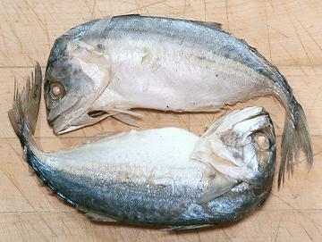
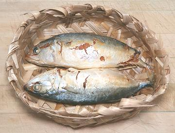

Largest of the fish called mackerel, this Spanish Mackerel can weigh nearly 100 pounds, measure up to 6 feet long and live for over 20 years. It is found along the Atlantic coast of the Americas from the U.S. / Canada boarder almost to Argentina. Sports fishing brings in well over twice the catch of commercial fishing. The photo specimen weighed about 13 pounds. Photo by Stephen Ewen distributed under license license Creative Commons Attribution-ShareAlike v3.0 Unported..
More on the Mackerel Family.
Prep & Cooking: Despite its importance in the Philippines and Southeast Asia, I have not yet found whole Short Mackerel here in Southern California. I do have detailed pictorial instructions for the nearly identical Indian Mackerel, so refer to that page. for normal prep.
In Thailand, this fish is usually served whole, having been gutted through the gill slots or by bending the head back.
 The photo to the left shows a preparation method used in Thailand. The fish are gutted through the gill slots and by bending the head back. The Head is then bent forward so they can be fit in the small boiling baskets used. Usually this is three fish per basket, but These were probably cooked two fish to a basket because all were bent the same. They are boiled in heavily salted water. This method allows the fish, once boiled, to be held for two days before needing to be re-boiled, and it will keep refrigerated for a week or more.
Short Mackerel processed as in the previous paragraph are normally
fried and served with a dip (see our recipe
Fried Short Mackerel).
Thais also serve these fish whole and straight on an oval plate doused
in a curry sauce. In the Philippines, these fish are often fried whole
and served on an oval plate with dips and sauces. These fish were
purchased from a large Asian market in Los Angeles (San Gabriel) for
2020 US $3.99 / pair.

Here is another form, prepred the same way as in the previous paragraph,
but with the tail bent instead of the head. These were frozen in the
baskets they were cooked in and bagged in plastic for sale. The fish were
8-1/2 inchs long in an 8 inch basket. They weighed 8 ounces each. These
were purchased from the same store as those in the photo above, for
2020 US $1.49 / basket on special sale.